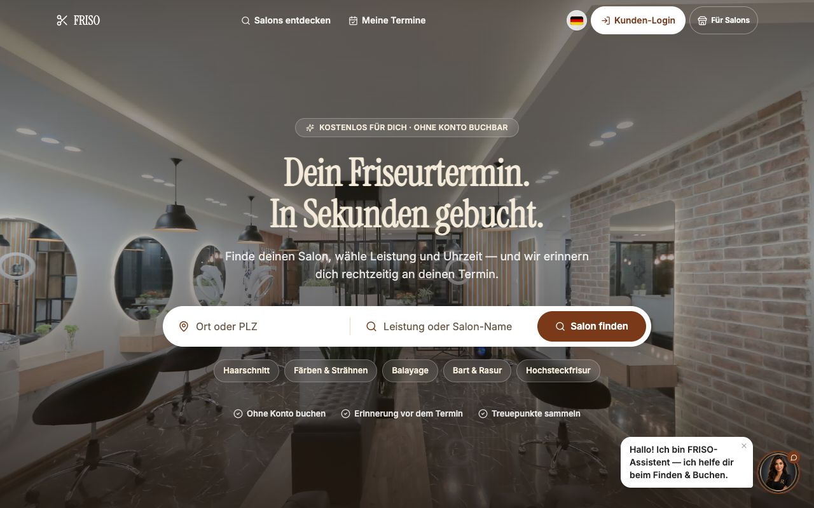
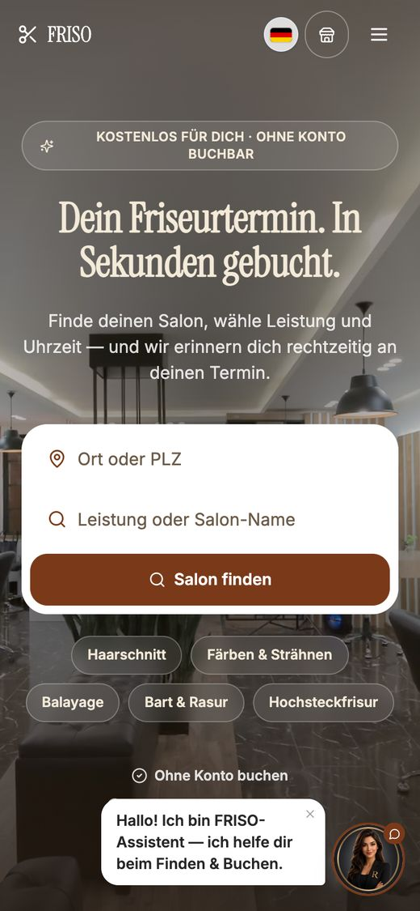

FRISO Salon herunterladen
Termine, Warteschlange, Team, Kasse und Kundenprofil für Friseur- und Barber-Salons.
- Windows
- Mac (Apple-Chip & Intel)
- iPhone & iPad
- Android


Für Computer
Alle drei Downloads sind gleichwertig. Wähle deinen.
Windows 10 / 11
64-Bit · .exe · 98 MB
Für alle PCs und Laptops mit Windows
Herunterladen⬇Mac mit Apple-Chip
M1, M2, M3, M4 · .dmg · 112 MB
Benötigt macOS 11 oder neuer
Herunterladen⬇Mac mit Intel-Chip
Ältere Macs · .dmg · 117 MB
Benötigt macOS 11 oder neuer
Herunterladen⬇Welcher Mac? Apple-Menü → „Über diesen Mac“. Steht bei Chip „Apple M…“, nimm den Apple-Chip, bei Prozessor „Intel“ den Intel-Download.
Online-Version und Handy
Die Online-Version läuft im Browser und lässt sich auch als App installieren. Du kannst sie zusätzlich zur Desktop-App nutzen: beide sind getrennte Installationen und stören sich nicht.
Mit dem Handy scannen oder:
Online-Version öffnen- iPhone / iPad: in Safari öffnen → Teilen → Zum Home-Bildschirm.
- Android-App: FRISO Salon als APK laden (einmal „Installation aus dieser Quelle“ erlauben) — oder in Chrome öffnen → App installieren.
- Computer: im Browser öffnen oder oben die Desktop-App laden.
Lokale KI, auch offline
Beim ersten Start fragt die App, ob sie eine kostenlose lokale KI (Ollama) einrichten soll. Das passiert nur mit deinem Ja: Ollama kommt direkt vom offiziellen Anbieter und wird per Prüfsumme kontrolliert, dazu lädt die App ein Modell, das zu deinem Rechner passt (ca. 2 GB, auf dem Mac insgesamt rund 2,2 GB, unter Windows etwas mehr). Danach antworten die KI-Funktionen auch ohne Internet.
- Einmalig ist Internet nötig, nur für diesen Download.
- Auf iPhone, iPad und Android läuft keine lokale KI. Dort nutzt die App die KI online.
Installation am Computer
Die Apps sind noch nicht von Apple oder Microsoft signiert. Deshalb zeigt dein System beim ersten Start eine Warnung. Das ist normal und lässt sich einmalig freigeben.
Mac mit macOS 15 Sequoia und neuer bei der Warnung „nicht geöffnet“
.dmg öffnen und verschieben
Doppelklick auf die Datei. Ziehe FRISO Salon in den Ordner Programme.
App einmal öffnen
Es erscheint „nicht geöffnet“. Klicke auf Fertig, nicht auf „In den Papierkorb legen“.
In den Systemeinstellungen freigeben
Systemeinstellungen → Datenschutz & Sicherheit, nach unten zu „Sicherheit“ scrollen und Trotzdem öffnen klicken.
Mit Touch ID oder Passwort bestätigen
Bestätigen und dann auf Öffnen klicken. Ab jetzt startet die App normal.
Schnellvariante per Terminal
Diese Zeile ins Programm Terminal kopieren und Enter drücken:
xattr -dr com.apple.quarantine "/Applications/FRISO Salon.app"
macOS 14 und älter / Windows
- Mac: Rechtsklick auf die App → Öffnen → Öffnen.
- Windows: „Weitere Informationen“ → Trotzdem ausführen.
- Die Apps brauchen macOS 11 oder neuer bzw. Windows 10/11.